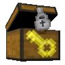

LockSecurity 
Information
LockSecurity allows players to lock their chests, doors and other containers with a physical key item they can duplicate, merge and distribute to friends. Unlike other container protection plugins, LockSecurity is unique in that you have a physical representation of your locked blocks as opposed to a slew of complicated chat-based commands. Alternatively, this plugin can be used exclusively by map makers or server administrators to design dungeons with locked chests to develop progression for players.
This is an elegant solution for any Semi-Vanilla, Factions or other servers where protection is required. It will keep your players' items safe!

Commands
LockSecurity provides both players and administrators with clean and minimal in-game commands to view player-specific information or manage any locked blocks on the server. All commands are pre-packaged with intelligent tab completion to make its use extremely easy, especially for a beginner.
For an in-depth list of all commands and their arguments provided by LockSecurity, visit the official SpigotMC resource page.
Permission Nodes
This plugin aims to be a drag-and-drop solution for most servers whether or not a permission management plugin is installed. While LuckPerms is recommended, by default, all players have access to the basics of LockSecurity's block locking functionality, as well as any necessary crafting recipes. If you so choose, every aspect of LockSecurity has a permission node including, but not limited to:
- Per-world permission-based lock limitations
- All administrative and player commands
- Every possible crafting recipe

Configurable
Last but not least, while LockSecurity's configuration may be minimal, it remains flexible to accommodate your server. Change which types of blocks are lockable with keys, in what world locks are allowed and how many among various other options.
For an in-depth list of all configuration options provided by LockSecurity, visit the official SpigotMC resource page.
Like LockSecurity? You might also like...
VeinMiner is another plugin made by Choco with a similar set of flexible commands, permissions and configuration options that let players efficiently destroy blocks of the same type in quick succession. Define custom tool categories, custom block lists and tool lists, maximum mining size and hunger exhaustion all globally, per-category or per-tool! An extremely useful and versatile plugin for any server. With over 250,000 downloads across all platforms, this is a must-have plugin!
Get more information on VeinMiner here!